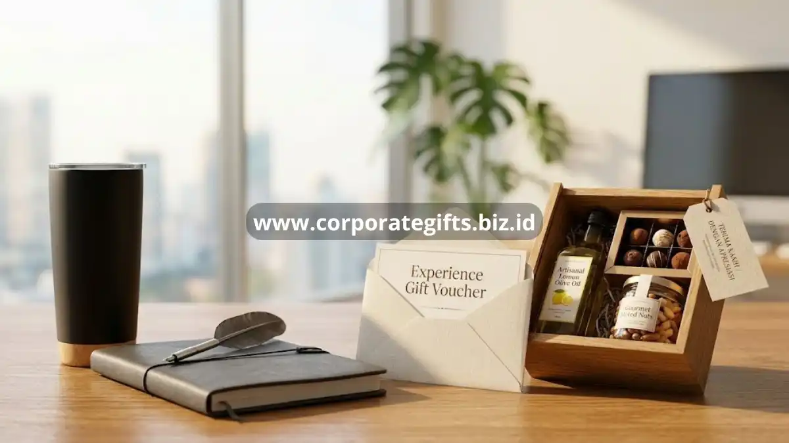

Poin Penting:
- Jenis client appreciation gifts terbagi menjadi fungsional, pengalaman, dan konsumsi premium.
- Sekitar 53% konsumen menyimpan produk fungsional bermerek, sangat efektif untuk kesadaran merek.
- 66% perusahaan kini menjadikan program gifting sebagai strategi arus utama untuk memperkuat loyalitas.
- Kesalahan umum meliputi pemilihan hadiah generik, mengabaikan budaya klien, dan hadiah di bawah standar.
- CorporateGifts dapat membantu Anda merancang program apresiasi klien yang strategis dan personal.
Jenis client appreciation gifts yang paling diminati umumnya terbagi menjadi tiga kategori utama, yaitu hadiah fungsional, hadiah pengalaman, dan hadiah konsumsi premium. Pemilihan kategori ini biasanya disesuaikan dengan profil klien, tingkat formalitas hubungan bisnis, dan anggaran perusahaan.
Hadiah fungsional mencakup perlengkapan kerja premium seperti tumbler, tas kerja, atau alat tulis eksekutif yang digunakan klien dalam aktivitas sehari-hari. Riset ASI yang dikutip GiftAFeeling pada 2026 menunjukkan bahwa sekitar 53 persen konsumen memiliki setidaknya satu produk drinkware bermerek, dan separuh dari mereka menggunakannya secara rutin, yang menjadikan kategori ini efektif untuk membangun kesadaran merek jangka panjang.
Hadiah pengalaman, seperti voucher dining atau layanan wellness, memberikan kesan personal karena berkaitan langsung dengan momen yang dinikmati klien. Sementara hadiah konsumsi premium, seperti hampers makanan dan minuman berkualitas tinggi, tetap menjadi favorit karena bersifat universal dan tidak menambah beban barang bagi penerima.
Bagaimana Client Appreciation Gifts Memengaruhi Loyalitas Klien?
Client appreciation gifts memengaruhi loyalitas klien dengan menciptakan ikatan emosional yang memperkuat persepsi positif terhadap perusahaan. Ketika klien menerima hadiah yang relevan dan berkualitas, mereka cenderung mengasosiasikan pengalaman positif tersebut dengan merek perusahaan, yang pada akhirnya memperkuat loyalitas jangka panjang.

Sendoso dalam laporan industrinya pada 2026 mencatat bahwa sekitar 66 persen perusahaan menggunakan program gifting untuk memperkuat hubungan dengan klien maupun karyawan, menjadikan gifting sebagai strategi arus utama, bukan sekadar pelengkap.
Selain itu, konsumen yang memiliki keterikatan emosional dengan sebuah merek diketahui memberikan nilai jangka panjang yang jauh lebih tinggi dibandingkan konsumen tanpa keterikatan tersebut, menurut studi retail yang dirangkum Sendoso pada periode yang sama.
Bagaimana Cara Memilih Client Appreciation Gifts yang Tepat?
Cara memilih client appreciation gifts yang tepat dimulai dengan memahami profil dan preferensi klien, menyesuaikan anggaran, serta memastikan hadiah mencerminkan identitas brand perusahaan. Hadiah yang dipilih secara asal tanpa mempertimbangkan relevansi justru berisiko terkesan generik dan kurang berkesan.
Beberapa faktor yang perlu dipertimbangkan dalam memilih client appreciation gifts:
- Relevansi dengan profil klien, termasuk industri, budaya kerja, dan preferensi pribadi bila diketahui.
- Kualitas produk yang mencerminkan standar profesional perusahaan pemberi hadiah.
- Tingkat personalisasi, seperti penambahan nama, logo, atau pesan khusus.
- Kepraktisan hadiah dalam kehidupan atau aktivitas kerja sehari-hari klien.
- Konsistensi dengan identitas brand perusahaan, termasuk kemasan dan presentasi hadiah.
CorporateGifts menyediakan layanan konsultasi pemilihan client appreciation gifts yang disesuaikan dengan kebutuhan spesifik perusahaan Anda, mulai dari hampers eksekutif hingga produk custom branding.
Kesalahan Umum dalam Memberikan Client Appreciation Gifts
Kesalahan umum dalam memberikan client appreciation gifts antara lain memilih hadiah generik tanpa personalisasi, mengabaikan konteks budaya klien, dan memberikan hadiah dengan kualitas di bawah standar profesional. Kesalahan-kesalahan ini berpotensi menimbulkan kesan sebaliknya dari yang diharapkan, yaitu terlihat kurang tulus atau bahkan tidak sopan.
Perusahaan juga sering terjebak pada pemberian hadiah yang seragam untuk semua klien tanpa mempertimbangkan skala hubungan bisnis, sehingga klien dengan kontribusi besar merasa kurang diistimewakan. Kesalahan lain adalah mengirimkan hadiah terlalu dekat dengan momen transaksi bisnis, yang dapat menimbulkan kesan hadiah tersebut bersifat transaksional, bukan apresiasi tulus.
Untuk menghindari kesalahan tersebut, penting bagi perusahaan bekerja sama dengan penyedia client appreciation gifts yang berpengalaman dan memahami etika bisnis korporat, seperti yang ditawarkan CorporateGifts melalui layanan kurasi hadiah profesional.
Client appreciation gifts adalah investasi strategis, bukan sekadar formalitas tahunan. Hadiah yang dipilih dengan tepat, diberikan pada momen yang relevan, dan mencerminkan identitas brand mampu memperkuat loyalitas klien serta mendorong pertumbuhan bisnis melalui referral dan hubungan jangka panjang.
Perusahaan yang ingin memulai atau meningkatkan program apresiasi kliennya dapat mempercayakan kebutuhan tersebut kepada CorporateGifts, yang menyediakan pilihan client appreciation gifts berkualitas, dapat dipersonalisasi, dan siap dikirim sesuai jadwal bisnis Anda. Hubungi tim CorporateGifts sekarang untuk konsultasi dan penawaran khusus bagi perusahaan Anda.
FAQ
1. Apa saja jenis client appreciation gifts yang paling diminati?
Hadiah yang paling diminati terbagi menjadi tiga kategori: fungsional (seperti tumbler premium), hadiah pengalaman (voucher eksklusif), dan konsumsi premium (hampers berkualitas tinggi).
2. Mengapa hadiah fungsional sangat direkomendasikan?
Sekitar 53% orang yang menerima barang fungsional akan menyimpan dan menggunakannya, menjadikannya strategi yang bagus untuk membangun kesadaran merek (brand awareness) sehari-hari secara konsisten.
3. Bagaimana pengaruh hadiah ini terhadap loyalitas klien?
Hadiah korporat dapat menciptakan ikatan emosional yang memperkuat persepsi positif, serta membuat konsumen memberikan nilai jangka panjang jauh lebih tinggi bagi bisnis Anda.
4. Apa kesalahan terbesar saat memilih hadiah klien?
Memberikan hadiah generik berkualitas rendah, tidak melakukan personalisasi, dan salah menilai konteks budaya serta tingkat skala hubungan bisnis dengan klien bersangkutan.
5. Bagaimana cara yang tepat menentukan budget untuk hadiah?
Budget sebaiknya disesuaikan dengan skala hubungan (tiered approach), sehingga klien besar yang loyal tetap mendapat perlakuan istimewa tanpa membuat anggaran perusahaan membengkak di luar kendali.
Butuh rekomendasi cepat untuk corporate gift?
Chat tim Pusat Souvenir & Merchandise Kantor untuk kurasi pilihan sesuai budget & kebutuhan brand Anda.